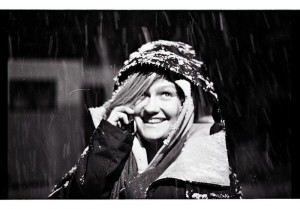
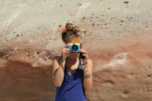

Cześć wszystkim!
Nazywamy się Julka i Lulka i jedziemy odkrywać Amerykę Południową. Dotychczas dużo jeździłyśmy razem na nartach, spędzałyśmy wspólnie niejedne wakacje i wiele nas łączy – lubimy aktywnie spędzać czas, poznawać nowych ludzi i miejsca oraz jesteśmy otwarte na nowe doświadczenia. Dlatego postanowiłyśmy wyruszyć razem w tę najdłuższą podróż w naszym życiu. Trzymajcie kciuki!
Julianna Czapska (Czapi)

Jadę realizować swoje marzenie.
{kind=link}
Zobaczenie Ameryki Południowej było moim marzeniem od gimnazjum. Trudno mi określić z czego dokładnie zrodziło się u mnie zainteresowanie tym kontynentem i tamtejszą kulturą. Chyba głównie z oglądanych przeze mnie filmów oraz zdjęć i czytanych książek. Pamiętam na pewno, że już wtedy uczyłam się hiszpańskiego z myślą, że kiedyś tam pojadę.
Szczęśliwie w odpowiednim czasie odkryłam na moich studiach (psychologia, UW), że można spokojnie wziąć kilka przedmiotów więcej na drugim roku i zniknąć na drugi semestr trzeciego roku. Dzięki temu mam teraz poł roku wolnego i moge wyruszyc w te wielka podroz.
Poza studiowaniem lubie aktywnie spedzac czas i jestem otwarta na nowe doswiadczenia. Dotychczas moim najodważniejszym dokonaniem było podróżowanie z koleżanką autostopem po Czarnogórze. Teraz czas na podróż po Ameryce Południowej!
===================================================
I´m traveling to realize my dream.
Seeing South America was my dream since high school. I find it hard to explain, why exactly I found this continent so interesting. I think it´s mostly because of the movies and photos I´ve seen and books I´ve read. Also, the main reason I´ve learned Spanish was because I´ve always wanted to go there.
Fortunately, I discovered that on my studies (psychology) it´s not that difficult to take a few more subjects on the second year and have some free time on the third year. Thanks to it I have time now to travel for 6 months .
I an active kind of person and I enjoy gaining new experiences. The bravest thing I´ve done so far was hitchhiking through Montenegro with my friend. Now it´s time for South America!
Hi all!
We are Julka and Lulka and are going explore South America. We know each other very well from skiing (we both are ski instructores), holidays and we have a lot in common – we love outdoor activities, meeting new people, traveling and we are open to new experiences. That’s why we decided to go together in the longest journey of our lives. Keep your fingers crossed!
Laura Czerniewska (Lula)
{kind=link}
Jadę, by naładować baterie.
Gdy moja przyjaciółka w zeszłym roku poleciała na kilka miesięcy do Ameryki Południowej strasznie żałowałam, że nie zabrałam się z nią, ale w tamtym momencie chciałam skończyć studia. Sama bym nie pojechała, ale teraz, gdy nadarzyła się okazja – Czapi ogłosiła swój pomysł – ja skończyłam studia licencjackie i nie potrzebuję niczego bardziej jak tylko na jakiś czas “oderwać się” od sposobu myślenia “ludzi z miasta” i odetchnąć, codziennie naprawdę przeżywać życie same w sobie, a nie na każdym kroku spełniać czyjeś oczekiwania i ogólnie przyjęte “normy”. Myślę, że lepszego momentu niż w czasie studiów nie ma na taki wyjazd, bo kiedy byłoby to możliwe? Gdy będziemy już związani z jakąś korporacją, która daje dwa tygodnie urlopu rocznie czy jak będziemy mieli rodzinę do wyżywienia? Taka jest ścieżka przeciętnego Europejczyka – przed wstąpieniem na nią chciałabym zobaczyć coś więcej!
===================================================
I want to charge my batteries.
Last year, when my friend went to South America to chill there for a few months I was feeling bad that I didn’t go with her, but at that moment I wanted to finish my studies. Now, when I’ve got my bachelor’s degree and a perfect opportunity to go there with someone (Chapi) I don’t even think about it. All i need is to get away for a moment, forget about the way people-from-big-cities think, about fulfilling somebody’s expectations all the time and just live simply. Meeting different people and seeing new places broadens the mind and I would recommend everyone to travel before they start something which is considered to be a “normal life” – with a “real” job and a family. There is no need to rush through life. Living is so much more than that.